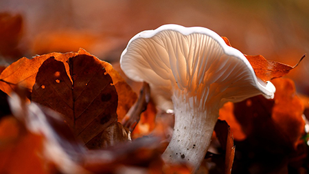

个人中心
投稿管理
动态
历史
创作中心
退出登录
全部功能
Styles
Tables
Typography
Flexible Columns
Services
Error Template
学科前沿
研究论文
新闻
观点
研究分析
生物学职业生涯
视频
前沿精选
学科脉络
生物学史
学科星图
学科星图
学科星图
学科星图
研究方向
实验共享
生物化学
植物生物学
动物生物学
细胞生物学
微生物学
分子生物学
神经生物学
演化与生态学
现代生物技术学
生物信息学
生物医学
生物图鉴
动物
植物
微生物
智能检索
搜索结果

碱性磷酸酶的提取
english
形态特征雄性成鸟:体羽大部为褐色，羽缘棕白色，形成鳞状花纹。自前额伸达后枕两侧的眉纹棕白色，贯眼纹棕褐色，杂有细微的黑色点斑;颊部及颈侧淡棕白，杂有黑褐色细纹;
碱性磷酸酶的提取
english
形态特征雄性成鸟:体羽大部为褐色，羽缘棕白色，形成鳞状花纹。自前额伸达后枕两侧的眉纹棕白色，贯眼纹棕褐色，杂有细微的黑色点斑;颊部及颈侧淡棕白，杂有黑褐色细纹;
碱性磷酸酶的提取
english
形态特征雄性成鸟:体羽大部为褐色，羽缘棕白色，形成鳞状花纹。自前额伸达后枕两侧的眉纹棕白色，贯眼纹棕褐色，杂有细微的黑色点斑;颊部及颈侧淡棕白，杂有黑褐色细纹;
碱性磷酸酶的提取
english
形态特征雄性成鸟:体羽大部为褐色，羽缘棕白色，形成鳞状花纹。自前额伸达后枕两侧的眉纹棕白色，贯眼纹棕褐色，杂有细微的黑色点斑;颊部及颈侧淡棕白，杂有黑褐色细纹;
碱性磷酸酶的提取
english
形态特征雄性成鸟:体羽大部为褐色，羽缘棕白色，形成鳞状花纹。自前额伸达后枕两侧的眉纹棕白色，贯眼纹棕褐色，杂有细微的黑色点斑;颊部及颈侧淡棕白，杂有黑褐色细纹;
碱性磷酸酶的提取
english
形态特征雄性成鸟:体羽大部为褐色，羽缘棕白色，形成鳞状花纹。自前额伸达后枕两侧的眉纹棕白色，贯眼纹棕褐色，杂有细微的黑色点斑;颊部及颈侧淡棕白，杂有黑褐色细纹;
碱性磷酸酶的提取
english
形态特征雄性成鸟:体羽大部为褐色，羽缘棕白色，形成鳞状花纹。自前额伸达后枕两侧的眉纹棕白色，贯眼纹棕褐色，杂有细微的黑色点斑;颊部及颈侧淡棕白，杂有黑褐色细纹;
碱性磷酸酶的提取
english
形态特征雄性成鸟:体羽大部为褐色，羽缘棕白色，形成鳞状花纹。自前额伸达后枕两侧的眉纹棕白色，贯眼纹棕褐色，杂有细微的黑色点斑;颊部及颈侧淡棕白，杂有黑褐色细纹;
碱性磷酸酶的提取
english
形态特征雄性成鸟:体羽大部为褐色，羽缘棕白色，形成鳞状花纹。自前额伸达后枕两侧的眉纹棕白色，贯眼纹棕褐色，杂有细微的黑色点斑;颊部及颈侧淡棕白，杂有黑褐色细纹;
学境
常用链接
联系方式
整合生物学知识，开发基于大数据与人工智能技术的知识挖掘与学习工具，建设物种综合服务信息平台，为教学培养、科学研究、科学普及提供支持。
全球物种名录
地球大数据科学工程
中国动物主题数据库
中国科学院生物多样性委员会
中国国家标本资源平台(NSII)
中国科学数据云
河北省唐山市曹妃甸区渤海大道21号
18132504332
2763005821@qq.com
学境由华北理工大学学生团队开发及运维，本站坚持知识共享精神，全部内容供网友自由使用 |
华北理工大学生命科学学院
回到顶部